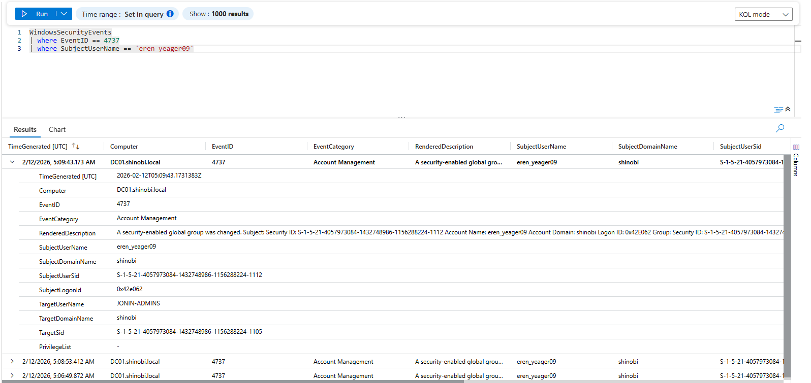
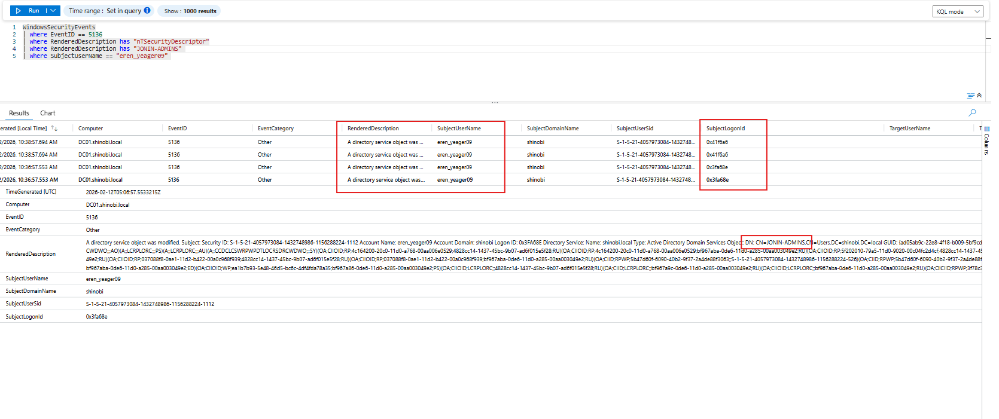
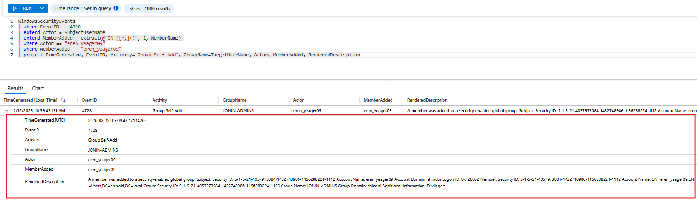
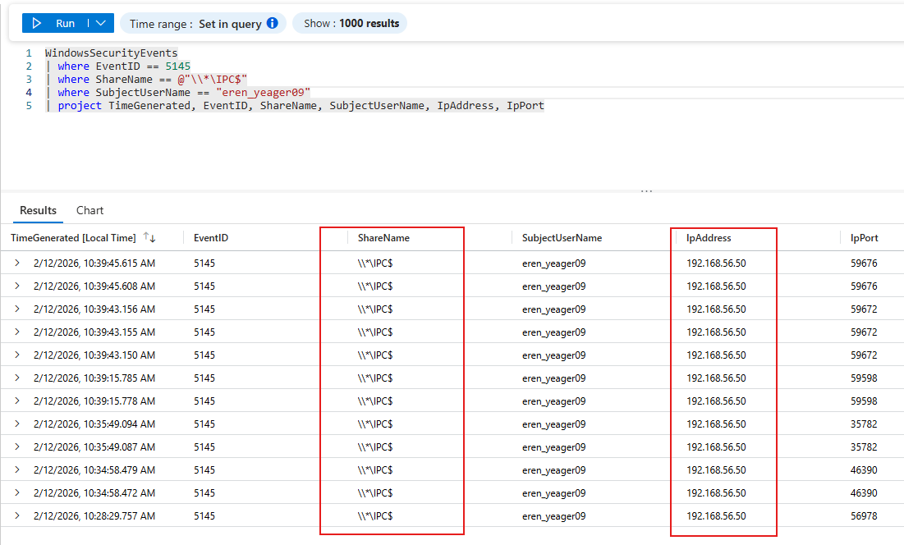

Detection & Telemetry (WriteOwner on Group)
Attack Vector: The attacker (eren_yeager09) abused the WriteOwner permission to seize ownership of the security group JONIN-ADMINS. Once they became the owner, they modified the group's DACL to grant themselves the WriteMembers right. Finally, they exercised this right to add themselves to the group, effectively escalating to Domain Admin privileges.
Key Log Sources:
Objective: Detect the change to the JONIN-ADMINS group structure before the member was added.
Logic: Event ID 4737 (A security-enabled global group was changed) captures modifications to group settings that are not member additions (e.g., changing the Owner or DACL).
KQL Query:
WindowsSecurityEvents
| where EventID == 4737
| where SubjectUserName == "eren_yeager09"
| project TimeGenerated, EventID, Activity="Group Settings Changed", TargetUserName, SubjectUserName, SubjectDomainName
Analysis:
eren_yeager09JONIN-ADMINS
Objective: Detect the exact moment eren_yeager09 modified the security descriptor of the JONIN-ADMINS group. Logic: We search for Event ID 5136 targeting the nTSecurityDescriptor attribute. This attribute contains the Owner and the ACL. A write to this attribute by a user who is not a Domain Admin is the primary indicator of the WriteOwner or WriteDACL attack step.
KQL Query:
WindowsSecurityEvents
| where EventID == 5136
| where RenderedDescription has "nTSecurityDescriptor"
| where RenderedDescription has "JONIN-ADMINS"
| where SubjectUserName == "eren_yeager09"
| project TimeGenerated, Computer, EventID, EventCategory, RenderedDescription, SubjectUserName, SubjectDomainName, SubjectUserSid, SubjectLogonId
Analysis:
eren_yeager09CN=JONIN-ADMINS...nTSecurityDescriptor.
Objective: Detect the privilege escalation event where the attacker adds themselves to the admin group. Logic: We monitor Event ID 4728 (Member Added). The specific behavioral anomaly here is a "Self-Add": The Actor (Subject) and the MemberAdded are the same identity. In a healthy AD environment, users are added to groups by distinct Identity Management service accounts, never by themselves.
KQL Query:
WindowsSecurityEvents
| where EventID == 4728
| extend Actor = SubjectUserName
| extend MemberAdded = extract(@"CN=([^,]+)", 1, MemberName)
| where Actor == "eren_yeager09"
| where MemberAdded == "eren_yeager09" // The "Self-Add" Logic
| project TimeGenerated, EventID, Activity="Group Self-Add", GroupName=TargetUserName, Actor, MemberAdded, RenderedDescription
Analysis:
eren_yeager09JONIN-ADMINSeren_yeager09WriteMembers right to promote themselves to an administrator.
Objective: Link the group modification to the attacker's physical machine. Logic: Correlate the Event 5145 (IPC$ Access) that occurred within the same timeframe as the group modification. Tools like net rpc and impacket rely on Named Pipes over SMB.
KQL Query:
WindowsSecurityEvents
| where EventID == 5145
| where ShareName == @"\\*\IPC$"
| where SubjectUserName == "eren_yeager09"
| project TimeGenerated, EventID, ShareName, SubjectUserName, IpAddress, IpPort
Analysis:
192.168.56.50
{kind=link}
{kind=link}
{kind=link}
{kind=link}